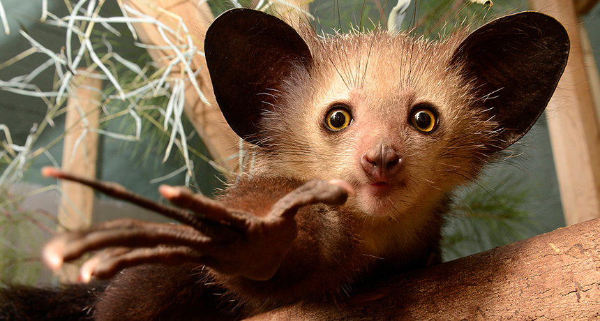

Enrichment ---- Red Panda
Yufei Zhang
Proposal One: Physical Structure of the Environment
The aye-aye (Daubentonia madagascariensis) is a lemur, a strepsirrhine primate native to Madagascar that combines rodent-like teeth that perpetually grow and a special thin middle finger.
Proposal Two: Feeding Method
Aye-aye is the world's largest nocturnal primate, and is characterized by its unusual method of finding food: it taps on trees to find grubs, then gnaws holes in the wood using its forward slanting incisors to create a small hole in which it inserts its narrow middle finger to pull the grubs out. This foraging method is called percussive foraging, and takes up 5–41% of foraging time.
Experts
-
Angela Glatston
- Angela chairs the Red Panda Network (RPN) Board of Directors. She joined the board of RPN in 2014. Angela is a trained zoologist with a strong interest in animal behavior, in particular the impact of environmental factors on reproduction and maternal behavior. She got her PhD on behavior and reproduction in mouse lemurs from University College London.
2019/2/18
- Angela chairs the Red Panda Network (RPN) Board of Directors. She joined the board of RPN in 2014. Angela is a trained zoologist with a strong interest in animal behavior, in particular the impact of environmental factors on reproduction and maternal behavior. She got her PhD on behavior and reproduction in mouse lemurs from University College London.